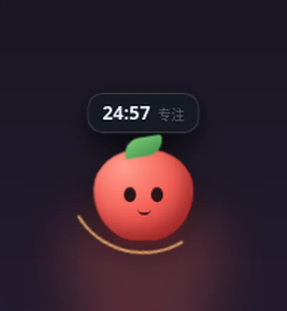
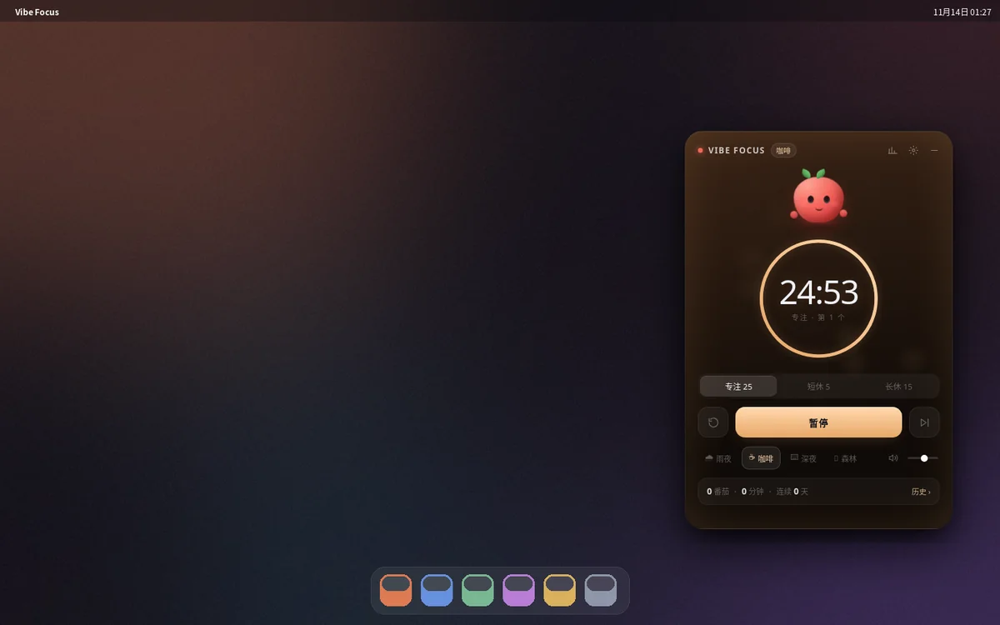
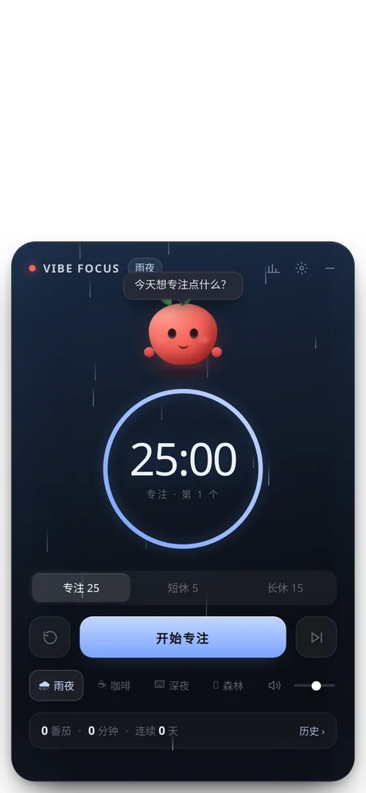

透明置顶的桌宠番茄钟。点「—」缩成一只小番茄蹲在屏幕角落， 按住就能拖到任何位置。四种氛围白噪音、情绪打卡、本地统计—— 全部离线运行，零依赖，不收集任何数据。
番茄精灵会眨眼、呼吸、专注时敲键盘、空闲 45 秒打瞌睡。计时结束后它跳起来撒花，然后问一句：现在感觉怎么样？
用结束时间戳反算剩余，不靠 setInterval 累加。窗口被遮挡、系统休眠后回来，时间依然准确。
雨夜、咖啡馆、深夜键盘、森林。白噪音由 WebAudio 现场生成，没有音频文件，切换时先淡出再回收节点。
每次番茄结束弹出 6 种心情 + 一句话备注。记录情绪，比记录数字更有意义。
今日番茄数、专注分钟、连续天数、近 7 天柱状图、心情分布。全部存在 localStorage，不联网。
无边框透明窗口，浮在壁纸和所有应用之上。面板顶栏整条可拖，桌宠态按住番茄任意拖动，位置跨重启记忆。
全局快捷键 Ctrl/Cmd+Shift+Space 直接开始或暂停，Ctrl/Cmd+Shift+F 唤出收起。托盘常驻，关窗口不进退出。
以下截图来自 Electron 实际运行画面（保留透明通道后合成到模拟桌面），未做视觉修饰。



安装包未做商业代码签名，因此系统会给出「未知开发者」提示——这是正常的，按下面的方式放行即可。
VibeFocus-1.0.0-Setup-x64.exearm64.dmg，Intel 选 x64.dmgxattr -dr com.apple.quarantine "/Applications/Vibe Focus.app"chmod +x VibeFocus-1.0.0-x86_64.AppImage./VibeFocus-1.0.0-x86_64.AppImageappimaged 或手动建 desktop 文件--appimage-extract-and-run。